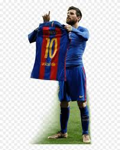
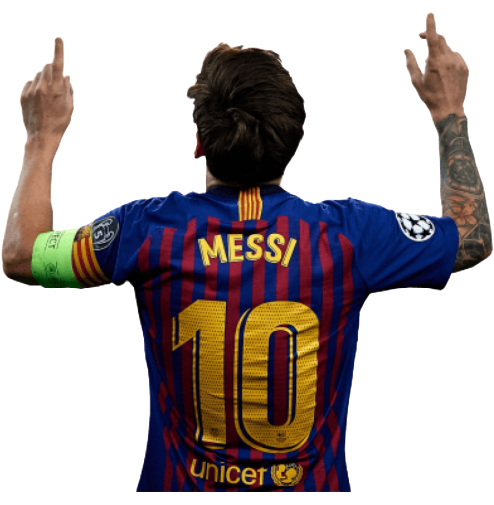
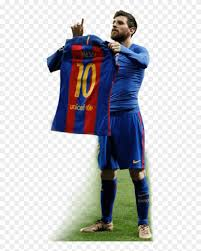
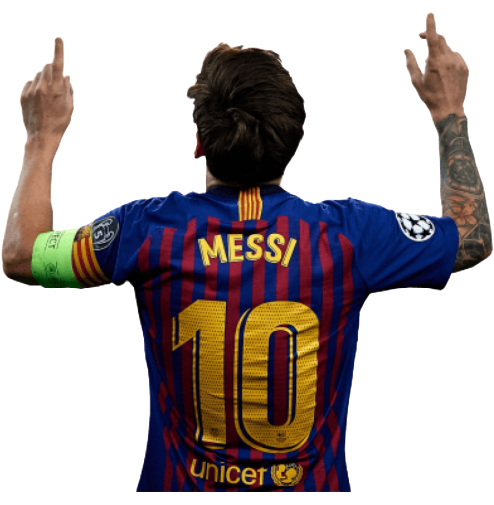

biografia;
Es un futbolista argentino que juega como delantero o centrocampista.
Se desempeña en el F. C. Barcelona de la Primera División de España y
en la selección de Argentina, equipos de los que es capitán.
Considerado con frecuencia el mejor jugador del mundo y uno de los mejores
de todos los tiempos, es el único futbolista en la historia que ha ganado,
entre otras distinciones, seis veces el Balón de Oro (dos Balones de Oro y
cuatro FIFA Balones de Oro), los cuatro primeros de forma consecutiva;
además de recibir seis Botas de Oro,14 un FIFA World Player,15 y un The Best FIFA.
En 2020, se convirtió en el primer futbolista en recibir un premio Laureus.
Con el Barcelona ha ganado 34 títulos, entre ellos, diez de La Liga y cuatro
de la Liga de Campeones de la UEFA, así como seis títulos de la Copa del Rey.
Goleador prolífico, ostenta, entre otros, los récords por más goles en una temporada
y un año calendario, máximo goleador de La Liga, la Supercopa de España, la Supercopa
de Europa, y jugador no europeo con más goles en la Liga de Campeones de la UEFA; además de
máximo goleador del F. C. Barcelona y de la selección argentina. Es uno de los futbolistas con
más asistencias, desde que se tienen registros, en partidos oficiales.
Nacido y criado en la ciudad de Rosario, a los 13 años se radicó en España, donde el Barcelona
accedió a pagar el tratamiento de la enfermedad hormonal que le habían diagnosticado de niño.
Después de una rápida progresión a través de la Academia juvenil del Barcelona, hizo su debut
oficial con el primer equipo a los 17 años, en octubre de 2004. A pesar de ser propenso a
lesiones en los inicios de su carrera, se estableció como jugador fundamental para el club.27 En
2007, fue finalista del Balón de Oro y del Jugador Mundial de la FIFA, logro que repitió en 2008.
Su primera campaña ininterrumpida fue la temporada 2008-09, durante la que con el Barcelona alcanzó
el primer triplete del fútbol español.A los 22 años, ganó su primer Balón de Oro y el premio al Jugador
Mundial de la FIFA del año
Datos relevantes acerca de su carrera deportiva hasta el momento: